Capítulo 3: Von Neumann en Gotinga y la influencia de Hilbert
En 1925, von Neumann se trasladó a Gotinga
uno de los centros neurálgicos del estudio de las matemáticas. Allí trabajó en los fundamentos de
las matemáticas y la mecánica cuántica, bajo la supervisión de Hilbert, hasta 1927. En este entorno,
desarrolló el trabajo que le consagraría como uno de los más grandes matemáticos de todos los
tiempos. Como su maestro Hilbert, quería lograr una teoría «metamatemática» capaz de demostrar
la coherencia de cualquier sistema formal.
En esta etapa, también se mostró como un prolífico autor de artículos sobre física subnuclear.
Al mismo tiempo, una de sus ideas fundamentales comenzaba a tomar forma con un artículo presentando
en 1927 en la revista «Mathematische Annalen». Esta idea era la teoría de juegos.
En 1929, año del crack, se casó con Marietta Kovesi, no sin antes convertirse a la fe católica. El
matrimonio no duraría mucho tiempo, ya que en 1937 se divorciaron. Poco después, en 1930, fue
invitado a Princeton, donde permaneció hasta 1933. A pesar de su sólida formación y amplios
conocimientos no destacó por sus habilidades pedagógicas. Su rapidez de pensamiento ponía en
apuros a muchos de sus alumnos, que no eran capaces de seguirle. Sin embargo, con la inauguración
del Instituto de Estudios Avanzados, von Neumann se convirtió en uno de sus primeros profesores.
Con la llegada del nacionalsocialismo al poder, decidió desvincularse totalmente de su posición
académica en Alemania. Desde entonces, centró su carrera profesional en Estados Unidos, lo que
logró al ocupar una Cátedra en Princeton hasta el final de sus días.
Una época de esplendor truncada por la enfermedad
A lo largo de la década de los años 40 y 50, su prestigio fue en aumento. Fruto de ello logró
importantes cargos en diversos ámbitos. En 1940, miembro del Comité Asesor Científico, en el
Laboratorio de Investigación Balística de Aberdeen, Md. Poco después, consultor en Los
Alamos Scientific Laboratory, donde participó en el «Proyecto Manhattan» con Enrico Fermi.
Se hizo cargo un nuevo modelo de computadora, el EDVAC (Electronic Discrete Variable
Computer). Al finalizar la II Guerra Mundial, colaboró en la creación de la calculadora
EDVAC y en otros desarrollos en tecnología informática.
Ante tal demostración de habilidades, combinada con su aversión al comunismo, el gobierno de
Estados Unidos le nombró miembro del Comité de Consultores de Aviación Científica, de la
Comisión de Energía Atómica (AEC) y asesor de la CIA.
Sin embargo, en pleno apogeo de su fama y con solo 53 años, el 28 de diciembre de 1957, aquel
judío huido de la Europa totalitaria falleció. La causa, un cáncer de huesos que no pudo
superar. John Von Neumann: aportaciones teóricas y prácticas.
A lo largo de su no tan extensa vida, Von Neumann realizó numerosas aportaciones teóricas y
prácticas a diversos campos, desde la lógica hasta la mecánica cuántica, pasando por las
ciencias militares y, cómo no, la economía. Y tuvo un más que notable influencia en el
poder político estadounidense.
Desarrolló la estrategia de destrucción mutua asegurada, como una conjunto de estrategias
dirigidas a evitar la destrucción por una guerra nuclear. En lógica, una de sus
principales ideas fue la definición de número ordinal. En política se definió a sí mismo
como «violentamente anticomunista y mucho más militarista de lo normal», lo que le llevó
a trabajar y a teorizar sobre diferentes aspectos de la Guerra Fría.
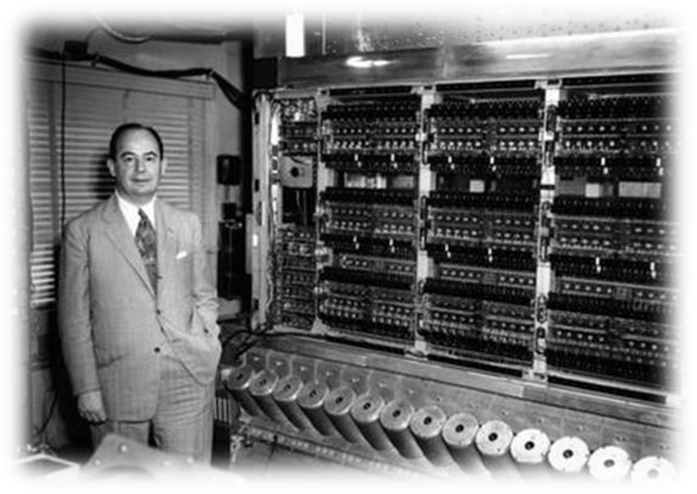
La teoría de juegos
Una de sus más interesantes aportaciones la realizó precisamente en etapa de mayor prestigio.
La conocida como teoría de juegos es un área de la matemática aplicada que utiliza modelos
para estudiar interacciones en estructuras formalizadas de incentivos (o juegos).
Nació como una herramienta en el seno de la ciencia económica, para explicar cómo se comporta
el ser humano en la toma de decisiones. Sin embargo, se utiliza en otros muchas ciencias y
disciplinas: biología, sociología, psicología, filosofía y ciencias de la computación.
El nombre teoría de juegos proviene del libro «Teoría de juegos y comportamiento económico»,
publicado a principios de la década de 1940 por John von Neumann y Oskar Morgenstern. El
objetivo era definir en términos matemáticos cómo se comportan los individuos cuando se
encuentran en una situación que puede llevar a compartir o ganar algo. Por lo tanto, la
teoría se aplica a un número infinito de escenarios más o menos complejos, desde un juego
de ajedrez hasta cómo se regula un mercado para los intercambios económicos.v
John von Neumann, el matemático que diseñó los ordenadores modernos
El científico húngaro-estadounidense construyó el primer computador que podía realizar
diversas tareas, entre otras muchas contribuciones a todo tipo de disciplinas desde la
física cuántica a la economía
El desarrollo de la informática, tal y como la entendemos hoy en día, ha sido posible gracias a
las aportaciones de algunos de los matemáticos más importantes del siglo XX, entre los que
capaces de realizar diversos tipos de funciones; como los nuestros, en los que solo tenemos que
instalar un programa diferente para que realicen nuevas tareas.
Von Neumann nació en Budapest en el año 1903 y destacó desde su juventud por sus capacidades
matemáticas y por su notable memoria fotográfica: era capaz de recitar libros que había
leído años antes. Se doctoró en matemáticas con tan solo 23 años y fue uno de los primeros
profesores del prestigioso Instituto de Estudios Avanzados de Princeton, en Estados Unidos.
Es conocido por sus avances en muchos campos de la ciencia, como la computación, la física
cuántica, el análisis o la teoría de juegos. Durante la Segunda Guerra Mundial, colaboró
en el proyecto Manhattan.
Su contribución a la computación se basa en las ideas de Alan Turing. En 1936, Turing había
ideado un objeto matemático, conocido como máquina de Turing, que formalizaba el concepto
de algoritmo o, dicho de otra forma, de programa informático. Turing introdujo el concepto
de máquina de Turing universal, capaz de reproducir cualquier algoritmo, siempre que se
introdujeran las instrucciones de manera adecuada. Su construcción real se denominó
ordenador de “propósito general”. Este concepto hace referencia a lo que hoy en día
entendemos como un ordenador programable.
PUBLICIDAD
El primer ordenador de propósito general —ENIAC (Computador e Integrador Numérico
Electrónico)— fue construido por los ingenieros John Prepert Eckert y John William
Mauchly en 1945. Este ordenador podía, en la práctica, reproducir cualquier
algoritmo siempre que se configuraran las instrucciones reconectando cables de forma
adecuada. Este era un proceso largo y tedioso, muy limitado por el número de cables
y, por tanto, del tamaño del propio ordenador.
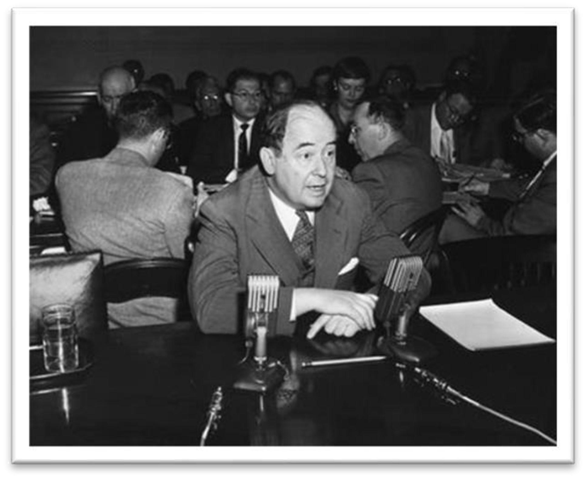
Von Neumann fue quien consiguió diseñar un ordenador al que se le podían introducir
instrucciones de manera electrónica. En su prototipo era suficiente con insertar
las instrucciones mediante un lector-grabador de cinta magnética. La arquitectura
del ordenador propuesto se conoce hoy en día como arquitectura Von Neumann.
En 1945 Von Neumann hizo circular un borrador donde detallaba cómo construir
ordenadores usando esta arquitectura, que recibieron el nombre de ordenadores
de propósito general con “capacidad para almacenar programas”. Hoy en día,
todos los computadores modernos son de este tipo.
La clave de la arquitectura Von Neumann estaba inspirada por la máquina universal de Turing:
almacenar instrucciones en la propia memoria del ordenador. Von Neumann diseñó su ordenador
con una estructura dividida en tres grandes partes, la CPU (unidad central de procesamiento),
la memoria, y los dispositivos de entrada y salida (cómo un teclado y una pantalla).
La CPU se encargaba de leer y modificar el contenido de la memoria electrónica y lo hacía
siguiendo las instrucciones contenidas en parte de la memoria del ordenador. Además, era
posible modificar la memoria, por ejemplo, introduciendo datos mediante el teclado, y
así modificar las instrucciones de funcionamiento de la CPU y, por tanto, la función que
ejecutaba el ordenador. Von Neumann, junto con Prepert Eckert y Mauchly, construyó el
primer ordenador de propósito general capaz de almacenar programas —EDVAC (iniciales
de Calculador Discreto Electrónico Automático Variable)— en la Universidad de
Pensilvania (EE UU).
Un todoterreno de la ciencia, la economía y la psicología
Las aportaciones de Von Neumann a la computación no acabaron aquí. También inventó un
objeto matemático llamado autómata celular. Estos sistemas dinámicos también tenían
cierto parecido con las máquinas de Turing, y resultaban muy adecuados para modelar
los introdujo, sino que también diseñó los primeros ejemplos de autómatas
autorreplicantes, capaces de duplicar un objeto inicial de manera indefinida
siguiendo unas reglas sencillas de evolución. Estas ideas fueron desarrolladas
posteriormente por el matemático John Conway, e inspiraron el famoso juego de
la vida, un ejemplo de autómata celular.
Von Neumann también es uno de los fundadores del campo conocido como teoría de juegos,
que estudia de manera matemática el comportamiento racional de individuos ante
un conflicto con diversas estrategias posibles. Esta teoría tiene aplicaciones en
muchos otros campos del conocimiento, notablemente en economía y psicología.
Por desgracia, este genio de las matemáticas murió de manera prematura a los 53 años,
diagnosticado de cáncer, probablemente debido a la radiación recibida durante los
ensayos nucleares en el proyecto Manhattan.
Durante su vida se codeó con científicos de la talla de Albert Einstein, Alan Turing
o Robert Oppenheimer, lo que puede ayudarnos a hacernos una idea precisa de la
envergadura intelectual de John von Neumann. Nació en 1903, en una
Budapest bien afianzada en el Imperio austrohúngaro, y desde muy pequeño
demostró tener una inteligencia extraordinaria que lo dotó especialmente para la
ciencia en general y las matemáticas en particular.
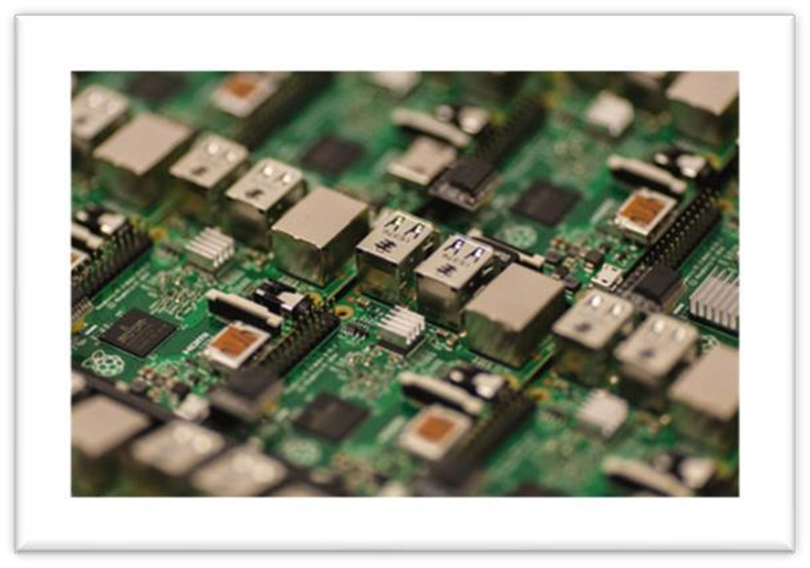
Las numerosas biografías y artículos que abordan sus logros suelen recoger que con solo seis
años era capaz de hablar en griego antiguo, una lengua que distaba mucho de su idioma materno,
y también podía desarrollar cálculos matemáticos complejos sin utilizar lápiz y papel.
Su única herramienta era su mente. Pero esto no es todo. Al parecer con ocho años estaba
familiarizado con el cálculo diferencial e integral, lo que provocó que fuese catalogado
como un niño superdotado que aventajaba a los niños de su edad desde un punto de vista
intelectual con una superioridad insultante.
Su ansia por aprender le llevó a simultanear sus estudios de Matemáticas en Budapest con la
licenciatura en ingeniería química que cursó en la misma Escuela Politécnica Federal de Zúrich
por cuyas aulas pasó no muchos años antes Albert Einstein.
Poco después de la conclusión de la Primera Guerra Mundial von Neumann inició sus estudios
de Matemáticas en la Universidad de Budapest, y en solo cinco años logró terminar la
carrera y obtener el doctorado. Su apetito desaforado por la ciencia y su ansia por aprender
ingeniería química que cursó en la misma Escuela Politécnica Federal de Zúrich por cuyas
aulas pasó no muchos años antes Albert Einstein.
Cuando concluyó sus estudios consiguió un puesto como profesor asociado de Matemáticas en
la Universidad de Berlín, y pocos años más tarde fue tentado por la Universidad de Princeton,
en Estados Unidos, para impartir allí un semestre. Durante varios años von Neumann ejerció
como profesor universitario tanto en Alemania como en Estados Unidos, pero la llegada de
los nazis al poder y la presión que comenzaron a ejercer de inmediato sobre los judíos
(von Neumann era judío) propiciaron que decidiese instalarse definitivamente en América.
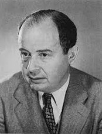
Su gran aportación a la informática: la arquitectura de von Neumann
El sobresaliente currículo académico y profesional de von Neumann provocó que la Universidad
de Princeton contase con él en el plantel de profesores de su recién inaugurado Instituto de
antes había recibido clases cuando estudiaba en Berlín. Pero en este centro no coincidió solo
con Einstein; también trabó amistad con Alan Turing, un joven y prometedor matemático
británico que estudiaba su doctorado y al que había conocido poco antes cuando von Neumann
ejerció como profesor sustituto en la Universidad de Cambridge.
John von Neumann y Alan Turing no compartían solo su pasión por las matemáticas. A ambos
les apasionaba la computación, lo que provocó que los dos volcasen una gran parte de sus
esfuerzos en esta disciplina.
John von Neumann y Alan Turing no compartían solo su pasión por las matemáticas. A ambos
les apasionaba la computación, lo que provocó que los dos volcasen una gran parte de sus
esfuerzos en esta disciplina. No está claro en qué medida el trabajo de uno influyó en
el del otro, aunque todo parece indicar que un artículo publicado por Turing en 1936
tuvo un gran impacto en el trabajo de von Neumann. En ese texto el matemático inglés
describió una máquina teórica que tenía una memoria infinita en la que era posible
almacenar tanto instrucciones como datos, lo que hacía posible la ejecución de distintos
programas.
Diagrama de bloques funcionales de la arquitectura propuesta por John von Neumann
La semejanza conceptual entre esa «máquina de Turing universal», que es como ha pasado a la
historia, y los ordenadores actuales es evidente. La mayor parte de los historiadores acepta
que von Neumann debió de verse muy influenciado por las innovadoras ideas de Alan Turing, una
semilla que diez años más tarde, a mediados de la década de 1940, le llevó a proponer un
modelo de arquitectura de computadores que hacía posible la ejecución de distintos programas
que previamente se podían almacenar en la memoria de la computadora. Este enfoque en aquella
época fue muy innovador y sorteaba las limitaciones de los computadores que ya se habían
construido, como el ENIAC o el Colossus, y que exigían una programación muy compleja y
laboriosa mediante interruptores y cables de conexión.
La arquitectura de von Neumann, en la que están claramente inspirados los ordenadores actuales,
propone la utilización de una unidad central de procesamiento o CPU, que contiene una unidad
aritmético lógica capaz de llevar a cabo cálculos matemáticos sencillos, un conjunto de
registros que permiten el almacenamiento temporal de datos y direcciones de memoria, y una
unidad de control que se encarga de recoger las instrucciones desde la memoria principal,
de decodificarlas y ejecutarlas. Además, este modelo de arquitectura también propone la>
existencia de una memoria principal en la que residen los datos y las instrucciones, y de
un bus de entrada y salida que permite cargar los programas y los datos desde un medio de
almacenamiento externo y entregar un resultado.
EN XATAKA
Los grandes retos que plantea la Computación cuántica, explicados por uno de
los principales investigadores españoles. El modelo de arquitectura propuesto por von
Neumann fue refinándose poco a poco hasta dar lugar a la aparición de los ordenadores
modernos, que conservan la mayor parte de las características descritas por el matemático
húngaro. No obstante, la paternidad de los sistemas de programa almacenado no debe ser
atribuida únicamente a von Neumann. Como hemos visto las contribuciones de Alan Turing
fueron igualmente decisivas, y el mismo von Neumann también se vio influenciado por otros
científicos, como John Presper Eckert y John William Mauchly, que tuvieron un rol crucial
en el diseño y la construcción del ENIAC en 1946, que fue una de las primeras
computadoras de propósito general.
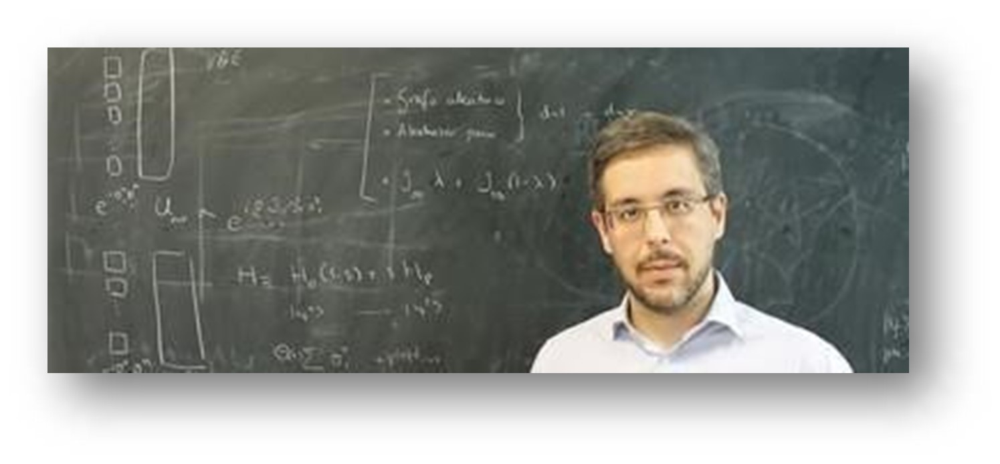
También nos ha legado avances en Matemáticas, Economía y Física cuántica
Las aportaciones de John von Neumann van mucho más allá de la teoría computacional.
En el área de las Matemáticas hizo contribuciones muy importantes enmarcadas en la teoría de
números, como la definición de número ordinal, y en la teoría de conjuntos, como el axioma
de regularidad o el axioma de fundación. En Economía propuso la introducción de la teoría
de juegos y la teoría del equilibrio general, lo que le llevó a concebir el teorema minimax
y a resolver el problema que Léon Walras propuso a finales del siglo XIX acerca de la
ocurrencia de estados de equilibrio en los modelos matemáticos que describían el desarrollo
de los mercados a partir del principio de oferta y demanda.
John von Neumann participó en el Proyecto Manhattan, que concluyó con la producción de las primeras
bombas atómicas, responsables del final de la Segunda Guerra Mundial.
Detallar todos los logros científicos de von Neumann exigiría que le dedicásemos no uno, sino
toda una colección de artículos, pero merece la pena que no pasemos por alto que también
hizo aportaciones muy relevantes en el ámbito de la axiomatización de la mecánica cuántica.
Incluso participó en el Proyecto Manhattan, que concluyó con la producción de las primeras bombas
nucleares.
Su papel en el diseño de las armas que pusieron fin a la Segunda Guerra Mundial fue describir
cómo debían ser los explosivos responsables de la compresión del núcleo de plutonio de las
primeras bombas nucleares. Sus contribuciones en el terreno armamentístico no son en absoluto
tan reseñables como las que hizo en otros ámbitos científicos, pero también forman parte
del legado de un genio que ha contribuido decisivamente a que nuestros ordenadores hayan
adquirido el desarrollo que tienen actualmente.
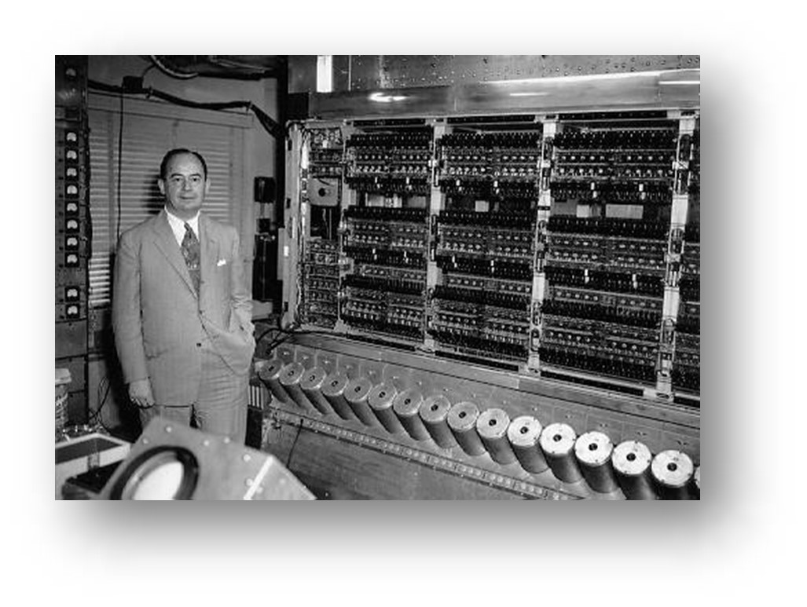
Capítulo 4: El sueño de John von Neumann
El sueño de John von Neumann
John von Neumann fue uno de los mátemáticos más importantes de la historia moderna cuyo
legado incluye, entre otras aportaciones, la arquitectura de computadores y las máquinas
autorreplicantes.
John von Neumann (1903-1957) fue un brillante polímata del siglo XX que realizó importantes
contribuciones científicas en materias tan diversas como matemáticas, mecánica cuántica,
teoría computacional e, incluso, economía y política. Fue un niño prodigio en su Hungría
natal que a los seis años dividía mentalmente números de ocho dígitos. Además del griego y
el latín, a los ocho años dominaba el cálculo integral. En la década de los 30 emigró a
los Estados Unidos, donde más tarde se nacionalizó, aceptando una oferta de profesor en
la Universidad de Pricenton.
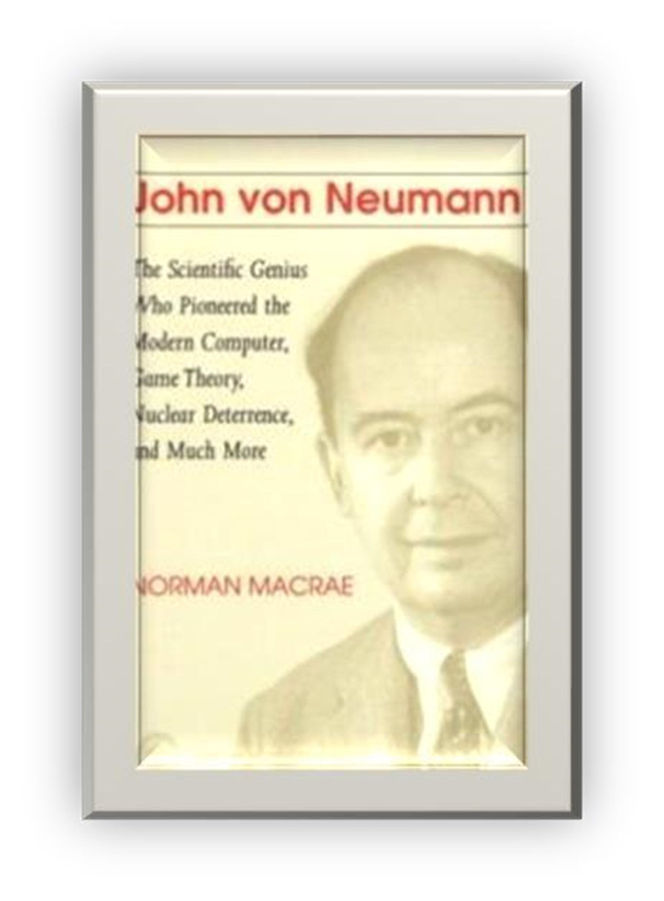
Quizás su faceta más conocida es su participación en el equipo del Proyecto Manhattan que
diseñó y fabricó las primeras bombas atómicas que fueron lanzadas sobre Japón a finales
de la Segunda Guerra Mundial. Suyo también es el Método de Montecarlo, en el ámbito de
la Estadística, utilizado para la resolución de problemas matemáticos complejos
obteniendo soluciones aproximadas a partir de la generación de números aleatorios. En
una época tan temprana como 1949 diseñó su arquitectura de computadores para resolver
el problema de la necesidad de reconfiguración permanente de los primitivos ordenadores
ENIAC; esta arquitectura es prácticamente la misma que tienen todos los ordenadores actuales.
Y, en fin, fundó la Teoría de Juegos como una rama independiente de las matemáticas.
Pero el genio inquieto de von Neumann también postuló teorías más futuristas para problemas
que hoy en día todavía pertenecen a la ciencia ficción, como la explotación minera de la
Luna o del cinturón de asteroides, la creación de satélites alimentados por energía solar
o la construcción de fábricas en otros planetas.
Las máquinas autorreplicantes de John von Neumann
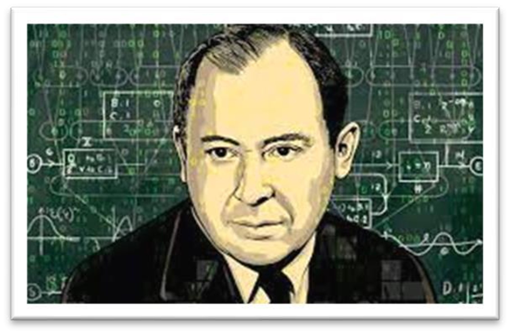Para afrontar tareas de esta complejidad, ideó conceptualmente la creación de las máquinas
autorreplicantes con la capacidad de recoger materias primas de su entorno, elaborar las
piezas adecuadas y ensamblarlas para generar copias de sí mismas. Con un crecimiento
potencialmente indefinido y exponencial, estos ingenios podrían afrontar aquellos trabajos,
no importa lo lentos o poco eficientes que estas máquinas fuesen. El bueno de John desarrolló
incluso una arquitectura de estos autorreplicantes, con ocho tipos de componentes y cuatro
elementos lógicos diferentes. Su máquina no viola ninguna ley física, por lo que en
principio es viable.
No pasó mucho tiempo hasta que los autores de novelas de ciencia ficción se apropiaron del
concepto, pues parecía la solución ideal para la exploración física del universo en busca
de otras formas de vida inteligentes. Naves no tripuladas para las que el tiempo no
importa y capaces de multiplicarse, con paciencia podrían llegar a todos los confines
del Universo. El monolito de la novela “2001, una Odisea del Espacio”, de Arthur C. Clark,
parece que originalmente era uno de estos replicantes. Casi 50 años después del estreno
de la película de Kubrik, un proyecto para la creación de un diseño libre de impreso 3D
está cerca de cumplir la fantasía más extravagante de von Neuman.
Reprap (REPlicating RAPid-prototyper) es una iniciativa de Internet para el desarrollo de una
impresora de 3D que pueda imprimir la mayor parte de sus propios componentes, con el objetivo
ideal del 100%. Su diseño es abierto y con licencia GNU GPL, permite llevar las ventajas del
software libre al mundo hardware. De este modo la filosofía Makers se está extendiendo a
todos los rincones donde hay innovadores. La capacidad de replicación de la impresora,
limitada por el momento a las piezas plásticas, está cercana al 60%, lo que permite unos
precios muy bajos de adquisición de uno de estos aparatos, por debajo de los 350 euros.
La comunidad de desarrolladores está trabajando con metales como fundentes y con capacidad de
replicar. RepRap es actualmente la impresora 3D de bajo coste más popular. No es todavía una
máquina autorreplicante propiamente dicha, ya que por el momento necesita de la intervención
humana para reproducirse, de manera similar a las plantas y a las abejas, pero el camino está
trazado y sólo el tiempo dirá si es posible una replicación del 100% completamente autónoma.
Los detractores de la teoría de las máquinas autorreplicantes afirman que no son viables; si lo
fueran, ya se le hubiera ocurrido a cualquier otra de las infinitas razas de vida inteligente
que sin duda pueblan nuestro universo, y las hubieran mandado explorar al espacio. Y si así
fuera, ya tendríamos que haber visto a estas naves, también denominadas “Sondas de Neumann”,
pululando por el espacio exterior… Quién sabe, yo prefiero pensar que somos la primera especie
en el Universo a la que se le ha ocurrido crear este tipo de máquinas. La innovación en la
exploración intergaláctica, sin duda, también existe.
Matemático, artífice del primer ordenador(1903 Budapest, Hungria, 1957 Washington D.C., USA)
John von Neumann nació el 28 de diciembre de 1903 en Budapest, Hungria, y murió el 8 de
febrero de 1957 en Washington D.C., USA. Su verdadero nombre es János Neumann. De pequeño la
llamaban Jancsi, un diminutivo del húngaro János, más tarde fue llamado Johnny en los United
States. Su padre, Max Neumann era un rico banquero. Creció en una extensa familia en
Budapest, donde de niño aprendió además de húngaro, alemán y francés. Tenía una increible
memoria que ponía de manifiesto desde muy pequeño haciendo demostraciones en reuniones
familiares. Fue un niño prodigio que a la edad de 6 años podía dividir mentalmente cifras
de 8 dígitos.
Aunque eran judios, Max Neumann no era un estricto practicante y John aprendió también
algunas tradiciones cristianas. El hijo de Max Neumann adquirió el von y se convirtió
en János von Neumann porque en 1913, Max Neumann compró un título que nunca utilizó.
Aunque su hijo sí.
En 1911, von Neumann entró en el Lutheran Gymnasium. La escuela tenía una estricta tradición académica.
Su profesor de matemáticas pronto reconoció en el joven Neumann un talento especial. En esa escuela
estudiaba también, un año mas que Jànos, otro talentoso matemático llamado Eugene Wigner.
La primera guerra mundial tuvo poco efecto en la educación de Neumann, pero después de la
guerra, Béla Kun controló Hungria durante cinco meses en 1919, con un gobierno comunista.
La familia se exilió a Austria aunque regresaron pronto. Cuando el gobierno de Kun cayó,
los judios fueron perseguidos por el hecho de haber participado en el gobierno.
En 1921, von Neumann completó su educación en el Lutheran Gymnasium. Su primera publicación
matemática, escrito conjuntamente con Fekete su tutor en la Universidad de Budapest, fue
publicado en 1922. Sin embargo Max Neumann quería que su hijo eligiera una carrera con más
posibilidades económicas. A pesar de las pocas plazas para judios consiguió ser admitido
en la univewrsidad de Budpest para estudiar matemáticas. Sim embargo renunció y fue a
Berlín a estudiar química siguiendo el consejo de su padre.
Allí estudió hastas 1923 cuando se fue a Zurich. Consiguió además excelentes resultados en los
Von Neumann recibió su diploma en ingeniería química de la Technische Hochschule en Zürich en
y Pólya que también estaban en Zurich. Ayudaba en los cursos de Weyl cuando éste se
ausentaba de Zurich.
Von Neumann recibió su doctorado en matemáticas de la universidad de Budapest, en 1926, con
una famosa tesis sobre teoría de conjuntos. Publicó una definición de número ordinal a la
edad de 20 años, definición que todavía se usa. Una de las teorías axiomáticas de conjuntos
aceptadas hoy día es llamada la teoría de von Neumann, Bernays, Gödel.
Entre 1926 y 1929 fue profesor de matemáticas en la Universidad de Berlín, y en Hamburgo entre
como un gran matemático.
En 1930, fue invitado a visitar la Universidad de Princeton (USA) donde impartió clases entre
los años 1930 y 1933, pero no fue un buen profesor, puesto que resultaba muy difícil seguir
sus explicaciones. Con la llegada de los nazis al poder y el convencimiento de que en los
Estados Unidos su posición académica tendría más futuro, se estableció en los Estados
Unidos, dónde ayudó a muchos científicos judíos que huyeron de Alemania para encontrar
trabajo. Al fundarse el Instituto de Estudios Avanzados en 1933, Von Neumman fue elegido
como uno de sus únicos 6 profesores matemáticos, actividad que realizó el resto de su vida.
En 1932, publicó Fundamentos matemáticos de la mecánica cuántica. Fue el fundador de la
Teoría de Juegos. Demostró el teorema del minimax y en 1944 publicó, junto con Oskar
Morgenstern, el famoso libro Teoría de juegos y del comportamiento económico. En 1929,
en un artículo en Mathematische Annalen, fue el primero en estudiar las álgebras
auto-adjuntas de operadores lineales acotados sobre un espacio de Hilbert. Estos
anillos de opradores se conocen con el nombre W*-algebras, pero J. Dixmier, en 1957,
las llamó "álgebras de von Neumann" nombre con el que hoy día son conocidas.
Von Neumann fue uno de los pioneros de las Ciencias de la Computación e hizo importantes
de los computadores actuales, propuso la adopción del bit como medida de la memoria de
los ordenadores, y resolvió el problema de la obtención de respuestas fiables con
componentes no fiables (bit de paridad).
Participó en el diseño del que se considera el primer ordenador, el ENIAC (que se construyó
tenía que cambiar las conexiones de las válvulas. Más tarde propuso separar el hardware
del software y se creó el EDVAC.
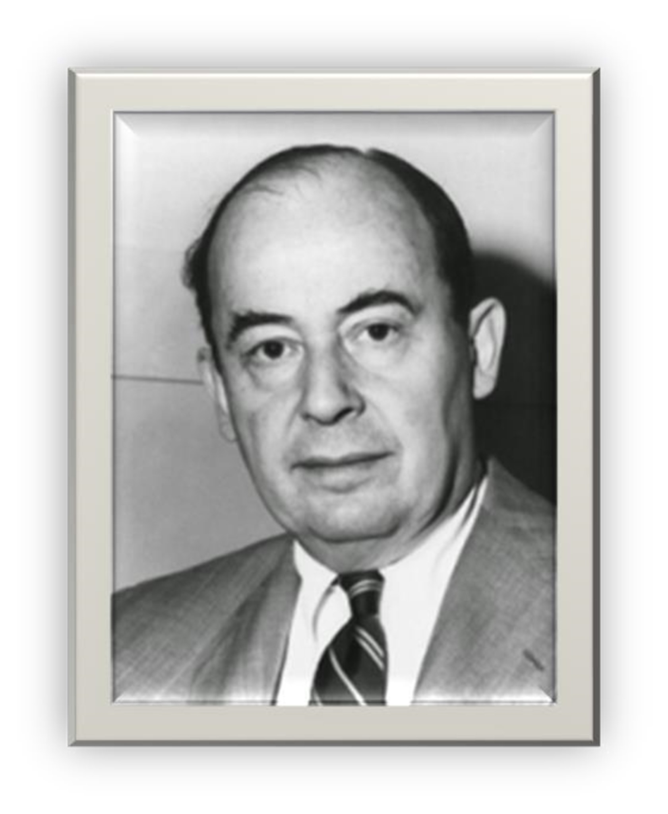
Neumann fue tan importante y clave para el desarrollo de la computadora digital que a la
mayoría de aquellas máquinas, se las conoce como procesadores von Neumann. Su tesis y
problema más importante sobre las máquinas fue la del concepto de autoreproducción, se
cuestionaba: ¿Puede ser una máquina artificial capaz de producir una copia de ella
misma, que pudiera también, ser capaz de crear más copias?. En sus ponencias para la
Universidad de Yale, The Computer and the Brain, afirmaba que las computadoras y los
seres humanos son diferentes clases de automatas.
Participó, junto con Einstein, en el desarrollo de la bomba atómica (Proyecto Manhattan) en el
laboratorio de Los Álamos en Nuevo México. El diseño de implosión de las bombas nucleares se
adeuda a Von Newmann. Él fue quién defendió y participó en la construcción de la bomba de
hidrógeno, y quién propuso la construcción de misiles intercontinentales. Además de ser una
persona de prestigio, inteligencia y conocimiento, también era divertido, pues frecuentaba
cabarets de Berlín, y se dice que durante su estancia en Princeton, eran famosas sus fiestas.
extraordinarias dotes
Janos dio muestras desde niño de unas extraordinarias dotes para las matemáticas. Asombraba
a los mayores recitando los números de una página de la guía telefónica, aprendida de memoria.
Sus profesores particulares le enseñaron alemán y francés así como cálculo avanzado, al
mismo tiempo que cursaba el bachillerato en el prestigioso Liceo Luterano de Budapest. Fue
aquí donde escribió su primer artículo titulado “La introducción de números transfinitos”,
que sería publicado en 1923.
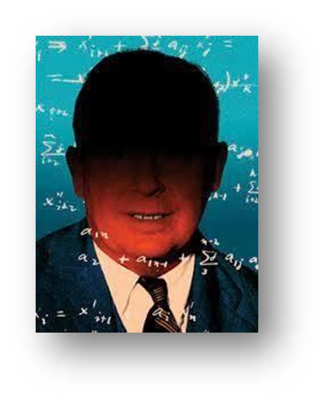
En 1919, al término de la Primera Guerra Mundial, y tras el ascenso al poder del gobierno comunista
de Béla Kun, la familia abandonó Hungría, exiliándose en Viena con escapadas al balneario de
Abbazia (actualmente Opatija, Croacia).
En 1921 los Neumann regresaron a Hungría, donde el joven János completó sus estudios de
enseñanza secundaria. Deseaba matricularse en la Facultad de Matemáticas de la
Universidad de Budapest. Sin embargo, su padre no veía que estos estudios pudieran
proporcionarle un futuro económico destacado. Finalmente aceptó estudiar Matemáticas en
la Universidad de Budapest y Química en la Escuela Politécnica Federal de Zúrich, donde
conoció a figuras como Hermann Weyl y George Pólya.
Zúrich
En 1925 János von Heumann se licenció como ingeniero químico por la Escuela de Zúrich.
Escribió su segundo artículo bajo el título “Una axiomatización de la teoría de conjuntos”,
que llamó poderosamente la atención de David Hilbert, quien, durante los años 1926 y 1927,
sería su tutor de posgrado en la Universidad de Gotinga, donde conocería a Robert
Opennheimer, al que volvería a ver años más tarde en la Universidad de Princeton.
A la edad de 23 años se doctoró en Matemáticas por la Universidad de Budapest. Enriqueció
su formación matemática asistiendo, con otros compañeros húngaros como Eugene Paul Wigner,
Leó Szilárd y Dennis Gabor, a seminarios en la Universidad de Berlín.
Albert Einstein.
De 1927 a 1929, von Neumann fue profesor en la Universidad de Berlín y de 1929 a 1930 en la
Universidad de Hamburgo. En esos años, publicó más de treinta artículos académicos importantes
entre ellos la definición actual de los números ordinales y la teoría de juegos de salón.
En 1929, la Universidad de Princeton le invitó a que pronunciara una conferencia sobre teoría
cuántica, resultado de la cual fue su nombramiento como profesor visitante para el período
19301933. Y antes de mudarse a los Estados Unidos, von Neumann se casó en 1930 con su amiga de
la infancia, Mariette Kovesi. Tuvieron una hija, Marina, que se convertiría en una
prestigiosa economista.
A fin de desarrollar modelos matemáticos adaptados al fenómeno cuántico, von Neumann
formuló, entre los años 1929 a 1940, una teoría de anillos de operadores, que en la
práctica abrió el campo de la geometría continua de los espacios de dimensiones
fraccionarias, conocida más tarde como “álgebras de von Neumann”.
Contribuyó intensamente al sistema axiomático de la teoría de conjuntos. También realizó
contribuciones fundamentales a la teoría de la medida analítica, funciones casi
periódicas, teoría de la red, teoría de juegos, lógica cuántica, economía matemática,
estadística matemática y dinámica de fluidos.
En 1932, y como fruto de la estrecha colaboración con David Hilbert, John von Neumann
publicó el libro "Los fundamentos matemáticos de la mecánica cuántica". En ese año,
ideó la forma débil del teorema ergódico relacionado con la mecánica estadística, y
realizó una contribución seminal a la programación lineal y nolineal en Economía con
su conferencia, pronunciada en Princeton, sobre "Ciertas ecuaciones de Economía y una
generalización del teorema del punto fijo de Brouwer".
En 1933, con la llegada de Hitler al poder en Alemania, los profesores universitarios de origen
judío quedaron expulsados de la comunidad docente y John von Neumann decidió aceptar la oferta
de la Universidad de Princeton en New Jersey, como el primer profesor en el nuevo Instituto
de Estudios Avanzados (IAS).
De 1935 a 1937 investigó en profundidad la teoría de estructuras algebraicas (Lattice theory)
En 1937, obtuvo la ciudadanía estadounidense como John von Neumann. Al año siguiente, se
marido en el campo de la Ciencia, trabajando en la programación de ordenadores. También
.en 1938, la Sociedad Matemática de los Estados Unidos le otorgó el Premio Bôcher por su
A pesar de que dejó la docencia, von Neumann se convirtió en una leyenda de la Universidad de
Princeton. Se decía que hacía bromas prácticas sobre Einstein, podía recitar al pie de la
letra libros que había leído años antes y podía editar el código de ordenador en lenguaje
ensamblador de memoria. La diplomacia natural de von Neumann le ayudó a moverse fácilmente
entre la intelectualidad de Princeton, donde a menudo adoptó una modestia discreta. Una
vez dijo que sentía que no había estado a la altura de todo lo que se esperaba de él.
No se parecía mucho al matemático estereotipado, pues era conocido como un hombre ocurrente,
alegre y un conductor agresivo: sus frecuentes accidentes automovilísticos llevaron a que
una intersección de Princeton se llamara "esquina de von Neumann".
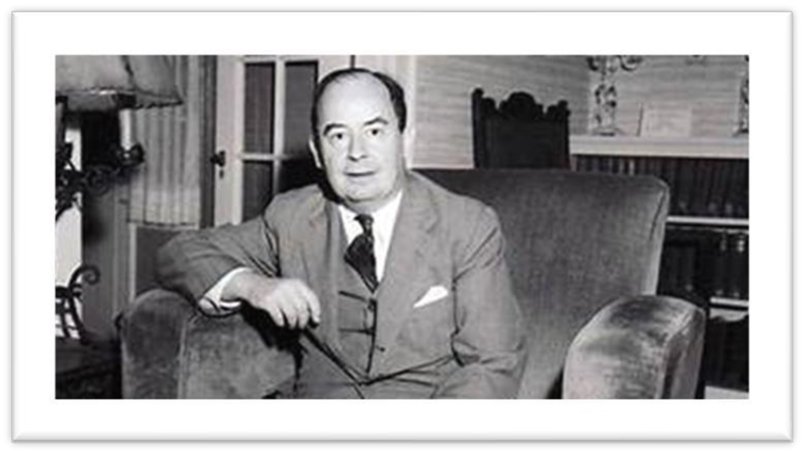
En 1943, y por invitación de Robert Opennheimer, John von Neumann comenzó a trabajar en el
Proyecto Manhattan como experto en la física de hidrodinámica y de ondas de choque, que
había aplicado previamente en explosivos químicos para el ejército británico. En el
laboratorio de Los Álamos en Nuevo México participó en el diseño de implosión de la bomba
atómica, que sería lanzada sobre el puerto de Nagasaki. Von Neumann formó parte del grupo
que seleccionó el objetivo en Japón, oponiéndose a la propuesta de bombardear el de Tokio.
En 1944, John von Neumann y Oskar Morgenstern publicaron el libro de 641 páginas, titulado
«Teoría de juegos y comportamiento económico», definiendo en términos matemáticos cómo se
comporta el ser humano en la toma de decisiones. Se utiliza no solo en matemáticas sino
también en otras muchas ciencias y disciplinas como biología, sociología, psicología,
filosofía y ciencias informáticas.
En los años de la posguerra, von Neumann además de investigar en el Instituto de Estudios
Avanzados de Princeton, fue consultor para el Ejército de los Estados Unidos y para
corporaciones empresariales como RAND Corporation, Standard Oil, General Electric e IBM,
entre otras.
Trabajó con la Escuela de Ingeniería Eléctrica de Moore que estaba construyendo el ENIAC,
diseñado por Presper Eckert y John Mauchly. Modificó el diseño para que operase con
almacenamiento de programas, según la configuración: memoria, unidad de control, unidad
aritmética-lógica y periféricos. Una mejora de este diseño, con aritmética binaria en
vez de números decimales como en el ENIAC, la aplicó en la máquina del IAS, que entró
en servicio en 1951.
Capítulo 5: Fallecimiento
autoproclamado anticomunista
John von Neumann era un autoproclamado anticomunista, favorecía la militarización, propuso
la construcción de misiles intercontinentales y la proliferación nuclear. Fue presidente
del Comité von Neumann para Misiles y, en 1955, tras solicitar la excedencia en la
Universidad de Princeton, fue nombrado miembro de la Comisión de Energía Atómica de los
Estados Unidos. Desde 1953 hasta su muerte fue el científico con mayor poder político en
Estados Unidos.
En 1955, a von Neumann le fue diagnosticado un cáncer óseo y su salud comenzó a deteriorase
rápidamente. La sombra de la muerte inminente le atemorizó, invitó a un sacerdote católico,
el padre Anselm Strittmatter a visitarlo y se convirtió al catolicismo.
El 15 de febrero de 1956 John von Neumann recibió la Medalla Presidencial de la Libertad de
manos del presidente Dwight Eisenhower. También le fue concedido el Premio Enrico Fermi en
ese año.
John von Neumann falleció el 8 de febrero de 1957, a la edad de 53 años, en el Centro Médico
del Ejército Walter Reed en Washington, D.C., bajo seguridad militar para que no revelara
secretos militares mientras estaba fuertemente medicado. Fue enterrado en el cementerio de
Princeton, Nueva Jersey.
Con su profunda dedicación al estudio de la teoría cuántica, a la bomba atómica y al ordenador,
John von Neumann probablemente ejerció mayor influencia en el mundo moderno que cualquier
otro matemático del siglo XX.
En este apartado podremos ver algunas aportaciones que realizó a la informatica
| Aportación | Descripción | Impacto |
|---|---|---|
| Teoría de juegos | Desarrolló la teoría de juegos, un campo de estudio que analiza las decisiones estratégicas en situaciones de conflicto e interacción. | Fundamental para la economía, la biología, la política y la informática moderna. |
| Arquitectura von Neumann | Propuso un diseño de computadora en el que los datos y las instrucciones son almacenados en la misma memoria. | Es la base de la mayoría de las computadoras modernas. |
| La bomba atómica | Participó en el desarrollo de la bomba atómica durante la Segunda Guerra Mundial, siendo uno de los principales científicos del Proyecto Manhattan. | Cambió el curso de la historia con el uso de armas nucleares. |
| Automatización celular | Introdujo la idea de los autómatas celulares, modelos matemáticos para simular procesos de autoorganización y evolución. | Impacto en la teoría de la computación, biología computacional y la inteligencia artificial. |
| Computación cuántica | Realizó importantes contribuciones en la teoría de la computación cuántica y la física cuántica, sentando las bases de esta área. | Revolucionó la computación moderna y futura, con aplicaciones potenciales en la criptografía y la inteligencia artificial. |
Roa Lopez Aldo David, 22191320, Grupo 626